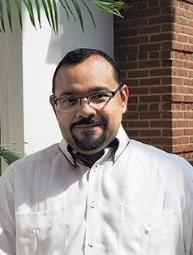

My Professor
One degree requirement for communications majors is successfully completing the visual media class. This semester, I am taking visual media with Dr. Carlos Evia. Dr. Evia earned his Ph.D. from Texas Tech University. Prior to studying at Texas Tech, Dr. Evia completed his undergraduate and masters degree in Mexico. Throughout his professional career, Dr. Evia has made strides in communications studies and rightfully earned high accomplishments. Dr. Evia currently works for the communications department at Virginia Tech. Dr. Evia has multiple publications including a book, various articles, and sponsored research. In May 2017, Dr. Evia won the Frank R. Smith Award for Distinguished Article in the Journal of Technical Communication. Dr. Evia is married and has a little girl named Sophia.
